Najnovije vesti, rezultati i informacije o srpskoj košarci
Raspored utakmica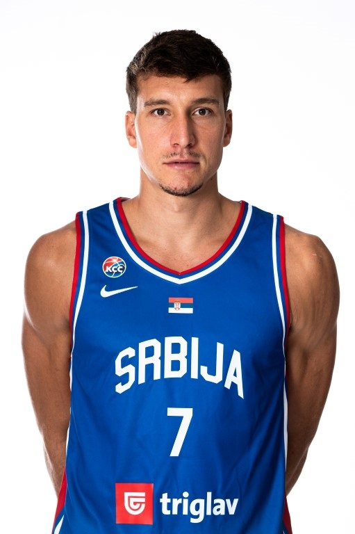
Bogdan Bogdanović je jedan od najtalentovanijih i najefikasnijih košarkaša Srbije u modernoj eri. Poznat po svom izuzetnom šutu, brzini i sposobnosti da preuzme ključne trenutke utakmice, Bogdanović je lider na terenu i igrač koji odlučuje rezultate. Njegova preciznost u napadu i čvrsta igra u odbrani čine ga nezaobilaznim članom reprezentacije i kluba u kojem nastupa. Sa stilom igre koji inspiriše i iskustvom u najvećim evropskim i NBA ligama, Bogdan je pravi simbol košarkaškog talenta Srbije.
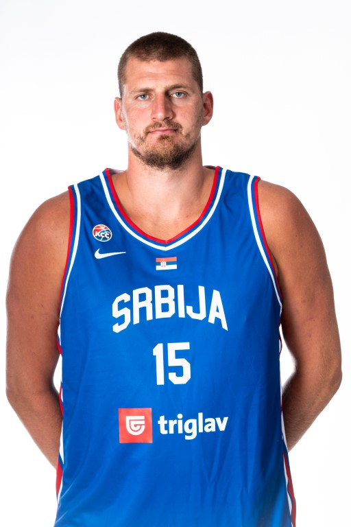
Nakon Bogdana Bogdanovića, na listi najboljih srpskih košarkaša je Nikola Jokić.
Poznat po izuzetnoj viziji igre, preciznim pasovima i sposobnosti da kreira šanse za saigrače,
Jokić je igrač koji menja tok utakmice.
Njegova sposobnost da postiže poene iz različitih pozicija, kombinovana sa snažnom
prisutnošću u skoku i odbrani, čini ga nezaobilaznim na parketu. Sa brojnim titulama i priznanjem za MVP u NBA ligi,
Jokić je simbol srpskog košarkaškog talenta i inspiracija mladim sportistima širom sveta.
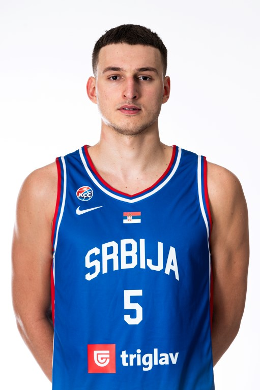
Nikola Jović je jedan od najperspektivnijih mladih srpskih košarkaša.
Poznat po svojoj svestranosti,
brzini i tehničkoj preciznosti, već se ističe kao igrač koji može da vodi tim i donese ključne poene.
Sa velikim
potencijalom za razvoj u Evropi i NBA ligi, Nikola je pravi simbol nove generacije srpske košarke i budući lider reprezentacije.
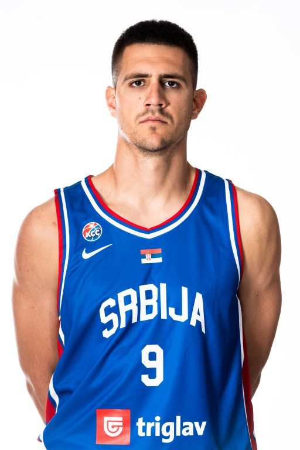
Vanja Marinković je mladi talent srpske košarke poznat po brzini i izuzetnoj preciznosti sa distance. Njegova sposobnost da stvori šanse za tim i da preuzme važne poene čini ga ključnim igračem na terenu. Vanja se već dokazao i u domaćim i evropskim ligama, a njegova energija i borbenost obećavaju svetlu budućnost u reprezentaciji i profesionalnoj karijeri.
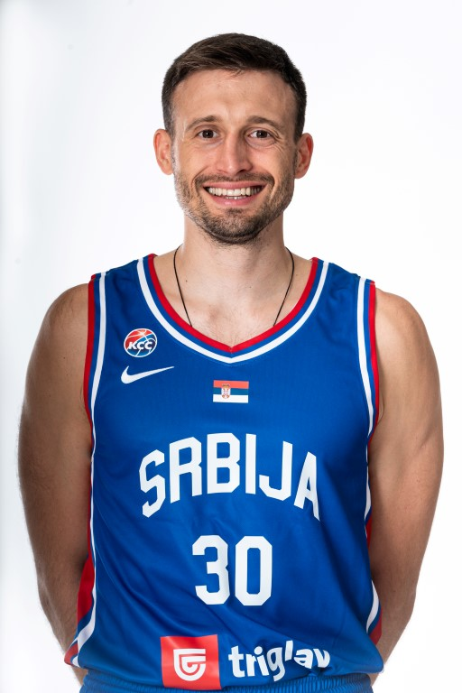
Aleksa Avramović se ističe kao jedan od najpreciznijih šutera srpske košarke. Njegova sposobnost da brzo reaguje, kreira šanse i postiže važne poene čini ga nezaobilaznim članom tima. Sa energijom i stilom igre koji inspiriše, Aleksa nastavlja da gradi svoju reputaciju kao pouzdan igrač i lider na terenu.
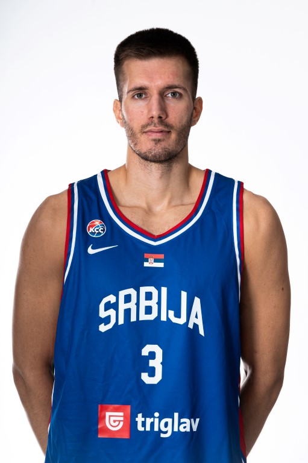
Filip Petrušev je jedan od najperspektivnijih mladih srpskih košarkaša, poznat po svojoj snazi, visini i tehničkoj preciznosti. Njegova sposobnost da dominira u reketu, kombinuje ofanzivnu agresivnost sa kontrolom igre i doprinosi timu u ključnim momentima, čini ga nezaobilaznim igračem.
| Datum | Utakmica | Kategorija | Mesto | Rezultat |
|---|---|---|---|---|
| 27.08.2025 | Srbija - Estonija | Muška | Letonija | 98-64 |
| 29.08.2025 | Srbija - Portugal | Muška | Letonija | 80-69 |
| 01.09.2025 | Srbija - Češka | Muška | Letonija | 82-90 |
| 03.09.2025 | Turska - Srbija | Muška | Letonija | 95-90 |
| 07.09.2025 | Srbija - Latvjia | 3x3 | Srbija | 14-20 |
| 05.09.2025 | Italija - Srbija | 3x3 | Itaija | 15-21 |
| 10.11.2025 | Srbija - Ukrajina | Ženska | Srbija | - |
| 07.12.2025 | Portugal - Srbija | Ženska | Portugal | - |
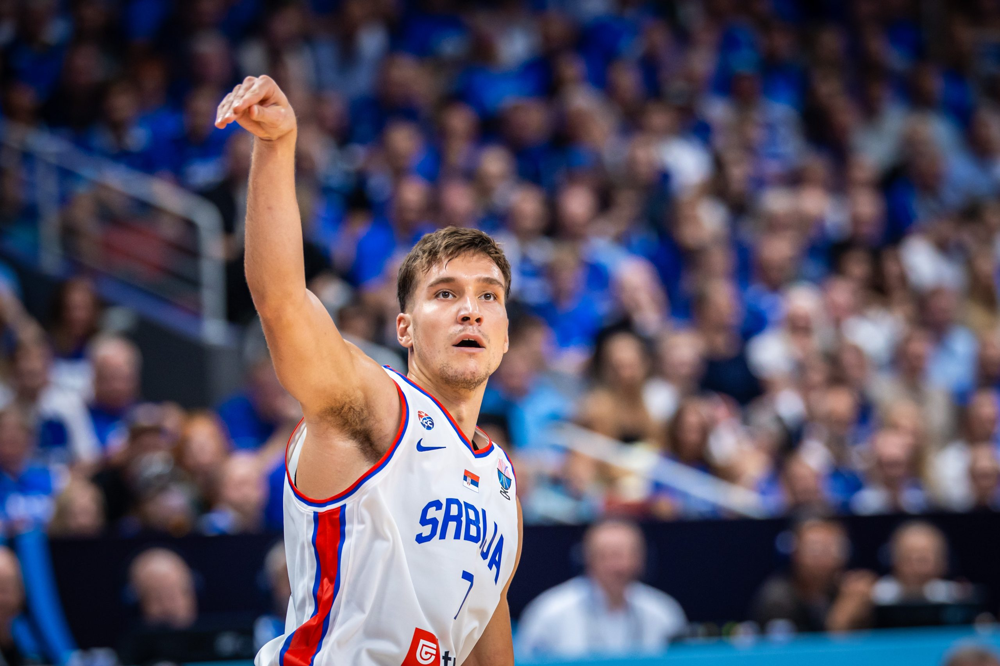
Kapiten reprezentacije Srbije, Bogdan Bogdanović, neće igrati u nastavku Evropskog prvenstva zbog povrede zadnje lože koju je zadobio na utakmici protiv Portugala u drugom kolu grupne faze takmičenja. Bogdanoviću je utvrđena ruptura mišića zadnje lože.
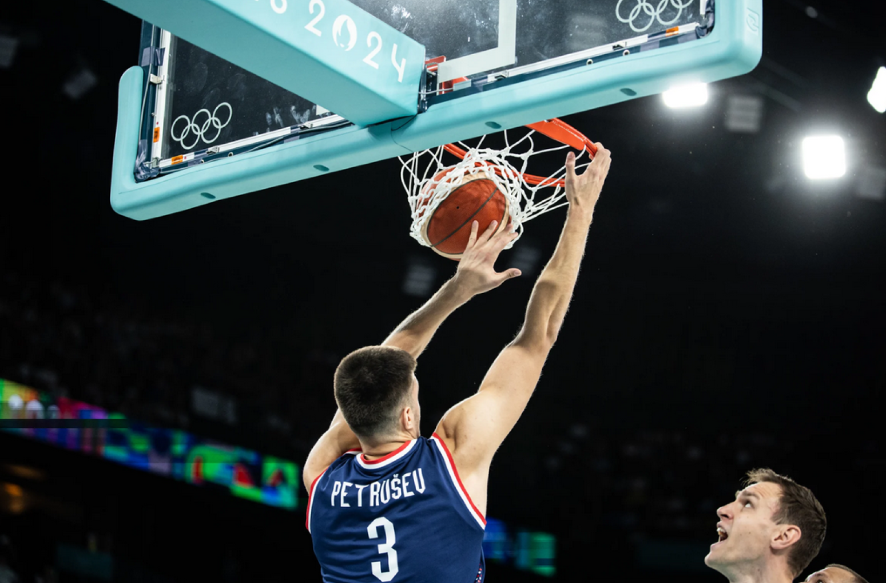
Po završetku utakmice Srbija – Portugal u drugom kolu grupne faze Evropskog prvenstva, 29. avgusta, disciplinski sudija FIBA doneo je odluku o kazni za reprezentativca Srbije Filipa Petruševa. Odluka je doneta na osnovu članova 110.2 [...]
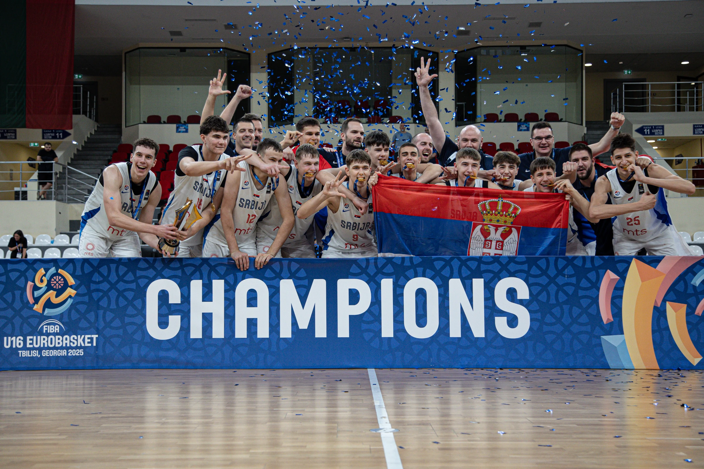
Zaista fenomenalan uspeh i najava lepih dana za srpsku košarku u budućnosti! Orlići su u Tbilisiju gubili sa 10 razlike na poluvremenu, ali su uspeli da preokrenu i da naprave veliki rezultat. [...]
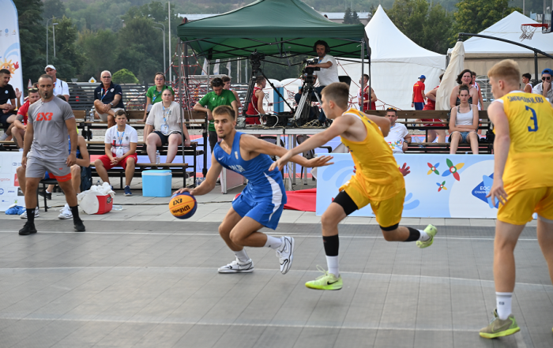
Srbija 3x3, momci do 18 godina, doživela je prvi poraz na EJOF u Skoplju, posle dve pobede u grupi, i to od Mađara rezultatom 14:18. Naš tim je, i pored ovog poraza, zauzeo prvo mesto [...]
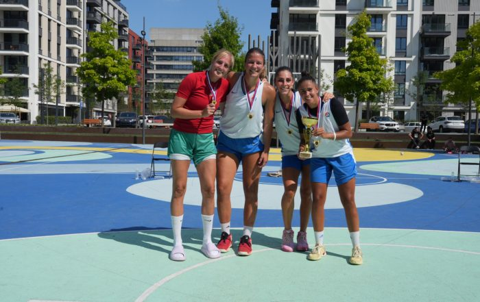
U vikendu za nama održana su dva turnira u basketu u Srbiji, jedan za dame i jedan u muškoj konkurenciji, a do pobeda su ponovo došle igračice Srbije 2 i na drugoj strani Pirot. Tereni [...]
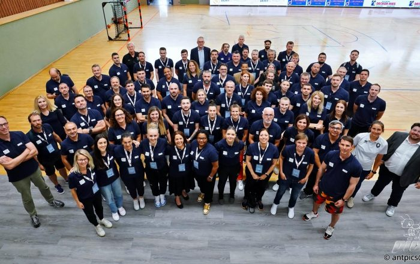
U Luksemburgu su održani četvorodnevna FIBA Mini basket konvencija i trenerski kurs, na kojoj su Košarkaški savez Srbije i Udruženje Mini basket KSS uspešno predstavljali treneri Aleksandra Radulović i Dušan Brkić. Srpski stručni tandem je [...]
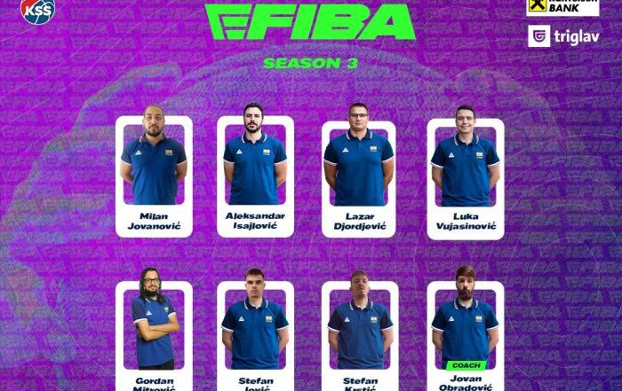
Reprezentacija Srbije u E-košarci obezbedila je plasman na FIBA OPEN III NBA2K, odnosno Evropsko prvenstvo. E-košarkaši Srbije zauzeli su peto mesto u Grupi 2 i igraće Evropsko prvenstvo koje je online od 29. oktobra [...]
| Ime | broj poena po utakmici |
|---|---|
| Nikola Jokić | 24.3 poena |
| Bogdan Bogdanović | 12.3 poena |
| Aleksa Avramović | 17.0 poena |